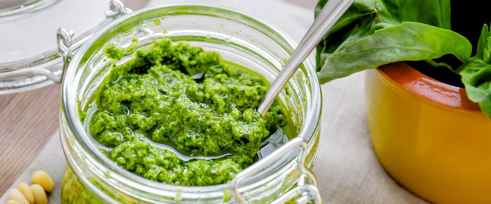

Песто

- TODO
1 чеснок + щепотка соли + 15гр. кедровых орехов - все положить в блендер, НЕмного перемешать. Добавить 40гр. НЕ мытого базилика - перемешать не сильно.
Налить 80гр. оливкового масла - перемешать. Натереть 50гр. пармезана - перемешать.
В конце добавить сок четверти лимона - перемешать в последний раз не сильно. Переложить в стеклянну баночку, сверху полить оливковым маслом. Хранить в холодильнике.
 Назад к списку рецептов
Назад к списку рецептов